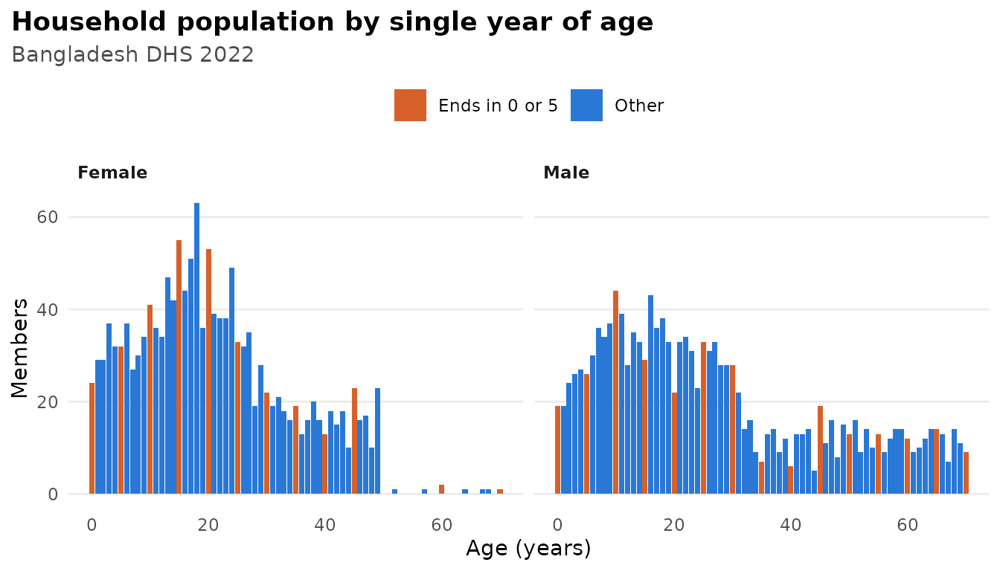
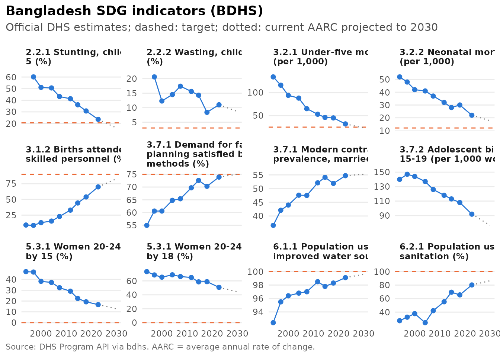

Synthetic data, data quality and inequality
Source:vignettes/beyond-estimates.Rmd
beyond-estimates.RmdThis article covers tools that go beyond computing a single estimate:
- calibrated synthetic data that reproduce the official numbers;
- checks of data quality;
- tests of change over time;
- measures of inequality;
- decomposition of change;
- progress towards the Sustainable Development Goals.
Everything below runs on synthetic data or on the bundled official
estimates. With your own files from bdhs_read(), the same
code gives real results.
Synthetic data that match the official estimates
bdhs_simulate() produces files with the right structure
but random values. bdhs_synthesize() goes further. It
calibrates the synthetic data so that key indicators reproduce the
official DHS estimates, nationally and by division and residence. It
uses only the published aggregates bundled with the package, so the
result contains no information about any real respondent and can be
shared freely.
kr <- bdhs_synthesize(2022, "KR", scale = 0.3)
attr(kr, "bdhs_targets")
#> # A tibble: 44 × 7
#> survey_id indicator api_id margin category official_label official
#> <chr> <chr> <chr> <chr> <chr> <chr> <dbl>
#> 1 BD2022DHS rh_del_facility RH_DELP_C_… natio… Total Total 63.5
#> 2 BD2022DHS rh_del_facility RH_DELP_C_… divis… barishal Barishal 52.3
#> 3 BD2022DHS rh_del_facility RH_DELP_C_… divis… chattog… Chattogram 58.3
#> 4 BD2022DHS rh_del_facility RH_DELP_C_… divis… dhaka Dhaka 69.9
#> 5 BD2022DHS rh_del_facility RH_DELP_C_… divis… khulna Khulna 81.9
#> 6 BD2022DHS rh_del_facility RH_DELP_C_… divis… mymensi… Mymensingh 51.6
#> 7 BD2022DHS rh_del_facility RH_DELP_C_… divis… rajshahi Rajshahi 69.9
#> 8 BD2022DHS rh_del_facility RH_DELP_C_… divis… rangpur Rangpur 60.5
#> 9 BD2022DHS rh_del_facility RH_DELP_C_… divis… sylhet Sylhet 50.6
#> 10 BD2022DHS rh_del_facility RH_DELP_C_… resid… urban Urban 73.9
#> # ℹ 34 more rowsbdhs_synthetic_fidelity() compares each calibrated value
with the official one:
fid <- bdhs_synthetic_fidelity(kr)
fid[fid$margin == "national", c("indicator", "official", "synthetic", "diff")]
#> # A tibble: 4 × 4
#> indicator official synthetic diff
#> <chr> <dbl> <dbl> <dbl>
#> 1 rh_del_facility 63.5 63.5 0.0166
#> 2 rh_del_csection 44 44.0 0.00575
#> 3 rh_anc_4plus 39.6 39.6 0.0210
#> 4 ch_diarrhoea 4.8 4.82 0.0231
summary(abs(fid$diff))
#> Min. 1st Qu. Median Mean 3rd Qu. Max.
#> 0.003076 0.007218 0.010419 0.011131 0.013858 0.028030Analyses on synthetic data therefore produce realistic numbers:
bdhs_estimate(kr, c("rh_del_facility", "rh_del_csection"), by = "v025")
#> # BDHS estimates: 2 indicators | BD2022DHS | 95% CI
#> # A tibble: 4 × 11
#> survey_id indicator label v025 estimate se ci_low ci_high n_unweighted
#> <chr> <chr> <chr> <fct> <dbl> <dbl> <dbl> <dbl> <int>
#> 1 BD2022DHS rh_del_facil… Deli… urban 73.9 1.56 70.7 76.9 870
#> 2 BD2022DHS rh_del_facil… Deli… rural 59.7 1.49 56.7 62.6 1701
#> 3 BD2022DHS rh_del_csect… Deli… urban 53.9 2.01 49.9 57.8 870
#> 4 BD2022DHS rh_del_csect… Deli… rural 40.4 1.47 37.5 43.3 1701
#> # ℹ 2 more variables: n_weighted <dbl>, api_id <chr>Synthetic data are meant for teaching, testing code and sharing reproducible examples. Only the calibrated indicators and margins match the real survey. Associations between variables, and every variable that was not calibrated, are artificial. Never draw substantive conclusions from synthetic data.
Data quality
bdhs_quality() runs the standard DHS data-quality checks
on whatever file you give it:
- age heaping (Whipple and Myers indices);
- women shifted out of the eligible age range (ratios at ages 15 and 50);
- completeness of birth dates;
- births displaced out of the five-year window;
- heaping of age at death at 12 months;
- anthropometric quality (z-score SDs, flagged values, digit preference).
pr <- bdhs_simulate(2022, "PR")
q <- bdhs_quality(pr)
#> ℹ Skipped checks the data do not support:
#> • "birth_date_completeness": needs b10 (completeness of birth date; BR, KR or
#> IR)
#> • "births_by_year": needs b3 and v008 (dates of birth and interview; BR, KR or
#> IR)
#> • "age_at_death": needs b6 (age at death; BR, KR or IR)
q[q$check == "age_heaping", c("statistic", "group", "value", "interpretation")]
#> # A tibble: 7 × 4
#> statistic group value interpretation
#> <chr> <chr> <dbl> <chr>
#> 1 whipple total 101. highly accurate
#> 2 myers total 3.70 NA
#> 3 whipple male 105. highly accurate
#> 4 myers male 4.06 NA
#> 5 whipple female 96.4 highly accurate
#> 6 myers female 4.01 NA
#> 7 pct_age_missing total 0 NA
plot(q, type = "age")
On real data these checks are informative. In the BDHS, for example, men’s ages are heavily heaped on numbers ending in 0 and 5, and far fewer women are recorded at age 50 than at 49.
Is a change significant?
bdhs_compare() tests differences between rounds, which
are independent samples, or between groups within a round, using the
full design-based covariance:
k14 <- bdhs_synthesize(2014, "KR", scale = 0.3, seed = 1)
k22 <- bdhs_synthesize(2022, "KR", scale = 0.3, seed = 2)
cmp <- bdhs_compare(k14, k22, indicators = "rh_del_csection")
cmp[, c("survey_1", "survey_2", "estimate_1", "estimate_2", "difference", "p_value", "annual_change")]
#> # A tibble: 1 × 7
#> survey_1 survey_2 estimate_1 estimate_2 difference p_value annual_change
#> <chr> <chr> <dbl> <dbl> <dbl> <dbl> <dbl>
#> 1 BD2014DHS BD2022DHS 23.1 44.0 20.9 1.23e-30 2.58It warns you when division-level comparisons cross rounds with
different division layouts. Use the harmonized
division_trend6 for those.
Inequality
bdhs_inequality() measures wealth-related inequality
with design-based standard errors:
- the rich-poor difference and ratio;
- the slope and relative indices of inequality (SII, RII);
- the concentration index, and Erreygers’ corrected version for binary outcomes.
bdhs_inequality(k22, "rh_del_csection", by = "v190")
#> # BDHS inequality: rh_del_csection by v190 | BD2022DHS
#> # A tibble: 6 × 13
#> survey_id indicator label by measure measure_label estimate se ci_low
#> <chr> <chr> <chr> <chr> <chr> <chr> <dbl> <dbl> <dbl>
#> 1 BD2022DHS rh_del_cse… Deli… v190 differ… Difference (… 52.3 3.39 45.6
#> 2 BD2022DHS rh_del_cse… Deli… v190 ratio Ratio (highe… 3.97 0.480 3.13
#> 3 BD2022DHS rh_del_cse… Deli… v190 sii Slope index … 64.5 3.67 57.2
#> 4 BD2022DHS rh_del_cse… Deli… v190 rii Relative ind… 4.57 0.424 3.80
#> 5 BD2022DHS rh_del_cse… Deli… v190 ci Concentratio… 0.234 0.0138 0.207
#> 6 BD2022DHS rh_del_cse… Deli… v190 eci Erreygers co… 0.412 0.0240 0.365
#> # ℹ 4 more variables: ci_high <dbl>, lowest <chr>, highest <chr>,
#> # n_groups <int>The same measures can be computed from the official estimates by wealth quintile, without any microdata:
bdhs_inequality_official("rh_del_csection", survey = c(2004, 2022))
#> # BDHS inequality: RH_DELA_C_CSC by Wealth quintile | BD2004DHS, BD2022DHS
#> # A tibble: 12 × 13
#> survey_id indicator label by measure measure_label estimate se ci_low
#> <chr> <chr> <chr> <chr> <chr> <chr> <dbl> <dbl> <dbl>
#> 1 BD2004DHS RH_DELA_C_… Deli… Weal… differ… Difference (… 18.3 NA NA
#> 2 BD2004DHS RH_DELA_C_… Deli… Weal… ratio Ratio (highe… 184 NA NA
#> 3 BD2004DHS RH_DELA_C_… Deli… Weal… sii Slope index … 18.4 NA NA
#> 4 BD2004DHS RH_DELA_C_… Deli… Weal… rii Relative ind… 529. NA NA
#> 5 BD2004DHS RH_DELA_C_… Deli… Weal… ci Concentratio… 0.656 NA NA
#> 6 BD2004DHS RH_DELA_C_… Deli… Weal… eci Erreygers co… 0.118 NA NA
#> 7 BD2022DHS RH_DELA_C_… Deli… Weal… differ… Difference (… 45.6 NA NA
#> 8 BD2022DHS RH_DELA_C_… Deli… Weal… ratio Ratio (highe… 3.05 NA NA
#> 9 BD2022DHS RH_DELA_C_… Deli… Weal… sii Slope index … 53.0 NA NA
#> 10 BD2022DHS RH_DELA_C_… Deli… Weal… rii Relative ind… 3.43 NA NA
#> 11 BD2022DHS RH_DELA_C_… Deli… Weal… ci Concentratio… 0.193 NA NA
#> 12 BD2022DHS RH_DELA_C_… Deli… Weal… eci Erreygers co… 0.339 NA NA
#> # ℹ 4 more variables: ci_high <dbl>, lowest <chr>, highest <chr>,
#> # n_groups <int>Why did it change? Decomposition
bdhs_decompose() splits the change between two rounds
into two parts: a composition part, due to a different
mix of people (for example, more educated mothers), and a
within-group part, due to change within each group. It
uses Kitagawa’s method, with jackknife standard errors.
h14 <- bdhs_harmonize(k14, vars = "mother_edu_level")
h22 <- bdhs_harmonize(k22, vars = "mother_edu_level")
dec <- bdhs_decompose(h14, h22, "rh_del_csection", by = "mother_edu_level", se = "none")
dec[dec$group == "All", c("component", "estimate", "percent")]
#> # Kitagawa decomposition: rh_del_csection by mother_edu_level, BD2014DHS -> BD2022DHS
#> # A tibble: 3 × 3
#> component estimate percent
#> <chr> <dbl> <dbl>
#> 1 composition -0.331 -1.58
#> 2 within 21.3 102.
#> 3 total 20.9 100Progress towards the SDGs
bdhs_sdg() tracks Bangladesh’s progress towards
SDG-related targets from the official estimates. It reports the annual
rate of change, the rate needed to reach the 2030 target, and whether
progress is on track.
s <- bdhs_sdg()
s[, c("sdg", "name", "latest_value", "target", "aarc", "required_aarc", "on_track")]
#> # BDHS SDG tracker (official DHS estimates) | target year 2030 | AARC in % per year
#> # A tibble: 12 × 7
#> sdg name latest_value target aarc required_aarc on_track
#> <chr> <chr> <dbl> <dbl> <dbl> <dbl> <lgl>
#> 1 2.2.1 Stunting, children u… 23.6 20.6 5.10 1.86 TRUE
#> 2 2.2.2 Wasting, children un… 11 3 3.18 16.4 FALSE
#> 3 3.2.1 Under-five mortality… 32 25 4.37 3.35 TRUE
#> 4 3.2.2 Neonatal mortality r… 22 12 2.92 8.02 FALSE
#> 5 3.1.2 Births attended by s… 69.9 90 7.29 14.1 FALSE
#> 6 3.7.1 Demand for family pl… 73.9 75 0.596 0.592 TRUE
#> 7 3.7.1 Modern contraceptive… 54.7 NA 0.162 NA NA
#> 8 3.7.2 Adolescent birth rat… 92 NA 2.50 NA NA
#> 9 5.3.1 Women 20-24 first ma… 16.7 0 3.55 NA FALSE
#> 10 5.3.1 Women 20-24 first ma… 50.7 0 1.77 NA FALSE
#> 11 6.1.1 Population using an … 99.1 100 10.4 NA TRUE
#> 12 6.2.1 Population using imp… 80.2 100 5.18 NA FALSE
plot(s)